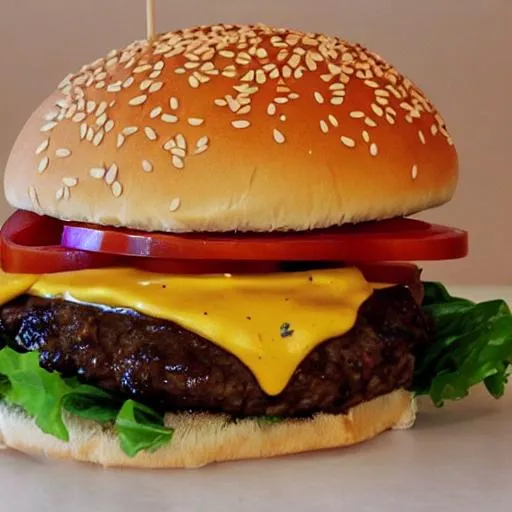

Hamburgers

Description
Juicy, seasoned, succulent, flavorful all beef patties on a delicious semi sweet, soft, fresh bun.
Ingredients
- Ground Beef
- Onion
- Tomato
- Lettuce
- American Cheese
- Ketchup
- Mayo
- Mustard
Steps
- Cook patties.
- Add cheese.
- Arrange ingredients in desired order.